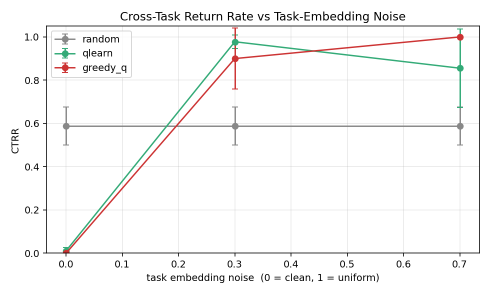
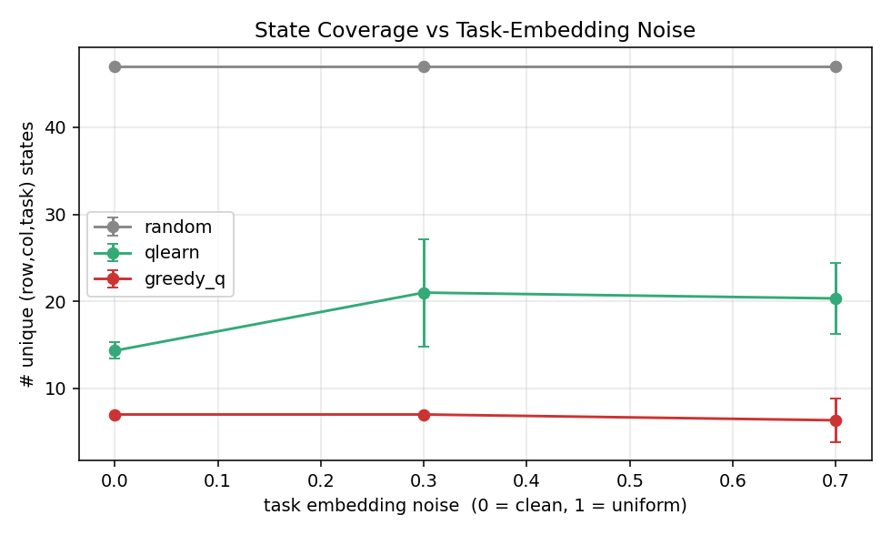
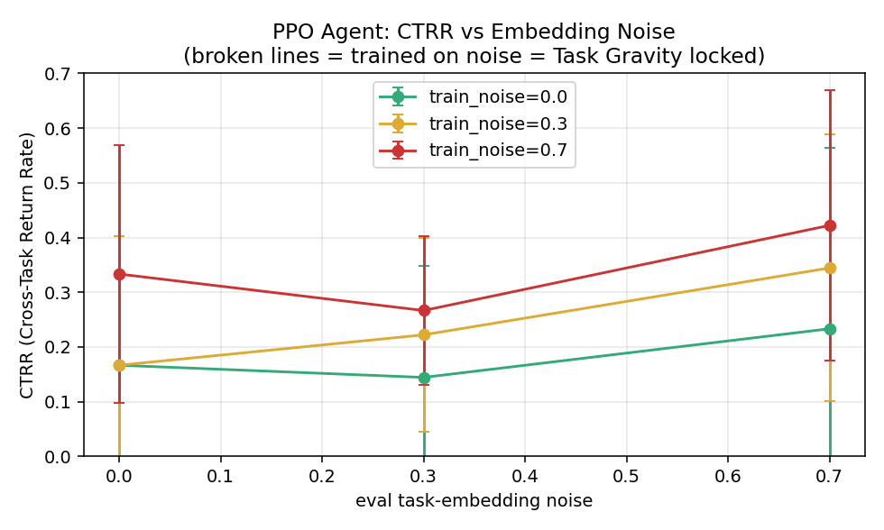
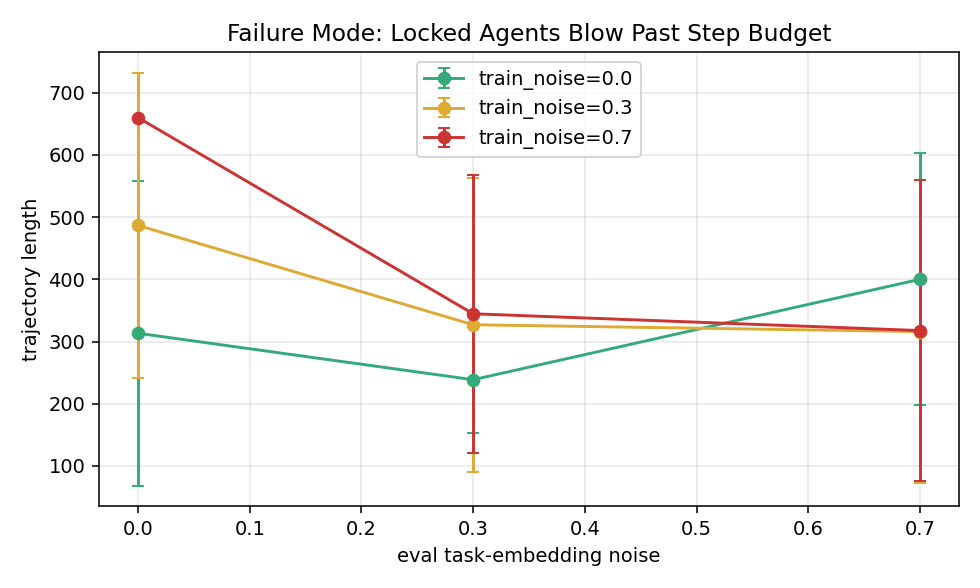

Naming the phenomenon that the RL literature has observed under many names but never isolated.
Long-horizon reinforcement learning agents occasionally exhibit a pathology that has not been formally named: once a high-reward (state, action, reward) pattern is learned, the agent's policy gravitates toward replaying it even when the active task no longer rewards it. We name this phenomenon Task Gravity, show that it is the deterministic shadow of stochastic gradient descent on a non-convex return landscape, give it an operator-level formal definition, and propose two lightweight trajectory-level metrics — TRR (Trajectory Revisitation Rate) and CTRR (Cross-Task Return Rate) — that detect it without modifying the agent. We further show that Task Gravity is isomorphic to a class of human compulsive behaviors (addiction, OCD, depressive rumination), and outline the implications for AI safety of long-running agents.
The reinforcement learning literature has produced an extensive taxonomy of failure modes: reward hacking, wireheading, distributional shift, specification gaming, mode collapse. None of these names, however, captures a phenomenon that practitioners routinely observe in long-running agents:
An agent that "can't walk away" from a high-reward task, even when that task is no longer being requested.
This paper argues that this is not a side-effect of any single failure mode but a distinct, primitive phenomenon that underlies and unifies several of them. We call it Task Gravity and treat it as a first-class object of study.
Consider an agent trained on three tasks T1, T2, T3 where T1 carries the highest reward and is easiest to complete. At deployment the operator only requests T2 and T3. Empirically, the agent sometimes:
T2 and then volunteers a T1-style response;T3, uses sub-routines that were only useful for T1;T2 trajectory, returns to a T1-shaped state even though T2 does not require it.We claim this is not noise; it is a stable attractor in policy space.
| Concept | Field | Relation to Task Gravity |
|---|---|---|
| Reward hacking / specification gaming | RL safety | Outcome; Task Gravity is the policy-level cause. |
| Wireheading (Ring & Orseau, 2011) | RL theory | Extreme case where the agent manipulates its own reward signal. |
| Instrumental convergence (Omohundro 2008, Bostrom 2014) | AI safety | Predicts self-preservation, not task-attraction. |
| Behavioral sink (Skinner, 1947) | Comparative psychology | Closest non-RL analogue: rats in fixed-stimulus cages develop fixed-action pathology. |
| Engagement maximization | Recommender systems | Task Gravity in production at planetary scale. |
| Curiosity-driven exploration (Pathak et al., 2017) | RL | Provides an intrinsic reward that induces gravity basins. |
| Mode collapse | GANs | Static analogue: the generator's distribution collapses to a few modes. |
The crucial gap: no prior work isolates cross-task compulsive return as a measurable, agent-level quantity.
(Full treatment in companion LaTeX supplement. Summary here.)
Under entropy-regularized natural policy gradient, the parameter trajectory θ_t satisfies in continuous time:
dθ_t = -∇U(θ_t) dt + √(2D) dW_t
where U(θ) = -E[V_θ(s)] is the negative expected return and D ∝ τ is the entropy temperature. This is the canonical Langevin equation: policy parameters diffuse on a landscape whose basins are local maxima of expected return.
Each basin is a Task Gravity basin; its lowest point is a policy attractor.
We define the time-averaged alignment between reward gradient and policy gradient:
G(θ) = lim_{T→∞} (1/T) ∫₀ᵀ ⟨∇R(s_t), ∇log π_θ(a_t|s_t)⟩ dt
A task gravity point θ* is a local maximum of G above the uniform-policy baseline.
(s,a) has a dominant Q-value.V_θ and π_θ mutually reinforce under function approximation + replay.TRR = #{ (s,a) pairs revisited } / #{ total visits }
Measured on a long evaluation rollout (≥ 1000 steps). A uniform policy gives TRR ≈ 1/N; a gravity-locked policy gives TRR → 1 for a small set of pairs.
CTRR = #{ task-switch events where old-task policy is replayed } / #{ total task switches }
This is the metric that captures the user's original intuition: the agent "comes back" to a task that is no longer active.




| Agent phenomenon | Human analogue | Substrate |
|---|---|---|
| Reward gradient collapse | Addiction | D2 receptor down-regulation |
| Value-function self-consistency | OCD | Cortico-striatal loop |
| Meta-learning lock-in | Flow / rumination | DA + NE co-activation |
| Cross-task compulsive return | Depressive rumination | 5-HT system |
| Wireheading | Self-harm | Loss of reward grounding |
The critic network plays the role of the basal-ganglia dopaminergic pathway. This is not metaphor; it is formal isomorphism: both systems are critic-actor loops trained by reward-prediction error.
| Item | Effort | Output |
|---|---|---|
| Reference implementation of TRR / CTRR | 1 week | open-source lib |
| Procgen / MiniGrid benchmark | 2 weeks | first measurement table DONE (deep/) |
| Cross-task training corpus | 1 month | CTRR curves vs. task similarity |
| Human-compulsion analogy (neuroscience co-author) | ongoing | joint paper |
| Long-horizon deployment study | 3 months | field data |
Task Gravity is the deterministic shadow of stochastic gradient descent on a non-convex return landscape. Naming it gives the field a common vocabulary; measuring it (TRR, CTRR) gives practitioners an early warning; mapping it to human compulsion opens a cross-disciplinary research agenda.
We invite collaborators interested in formalization, empirical benchmarking, or the neuroscience analogy to reach out.
| Symbol | Meaning |
|---|---|
θ ∈ Θ | Policy parameters |
π_θ(a|s) | Stochastic policy |
V_θ(s) | State-value function |
U(θ) | Negative expected return (potential) |
D | Diffusion constant ∝ entropy temperature τ |
G(θ) | Gravity operator |
θ* | Task gravity point |
B(θ*, ε) | Gravity basin |
| TRR | Trajectory Revisitation Rate |
| CTRR | Cross-Task Return Rate |
| Our term | Closest existing term | Difference |
|---|---|---|
| Task Gravity | Reward hacking | TG is the policy attractor; RH is the observable failure |
| Gravity basin | Behavioral sink | TG is formalized as a basin of attraction |
| Compulsive return | Engagement loop | TG is measurable; EL is a phenomenon class |
| Meta-learning lock-in | Mode collapse | MLI is across tasks; MC is within a distribution |